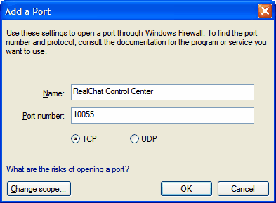

To allow access to the Control Center, first select the Add Port button.

In the Add a Port dialog enter a memorable name and enter the Port number that you have configured in the Bind Settings, and select the OK button. Repeat these steps for the chat server as well as the control center.
If you are using a different firewall, the steps will be similar to the above.
If you are running RealChat on a home computer, you need to ensure that your ISP will allow connections to your computer. If you have problems with users connecting to your chat server, check with your ISP to ensure that the ports that are specified in the bind settings are enabled and ask them to enable them if they are not.